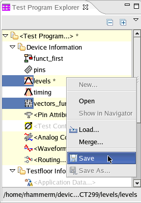

Changing setup data and saving the changes
When you change the setup data with the related tool, for example, change the levels using the level setup tool, the relevant component is tagged with the symbol *.
In the figure below the level and pattern data have been modified.
To save the changes:
- Highlight the component you want to save, right-click and select Save... .
- If you want to save more than one component, highlight the first, control-click the other
components, right-click and choose Save.
